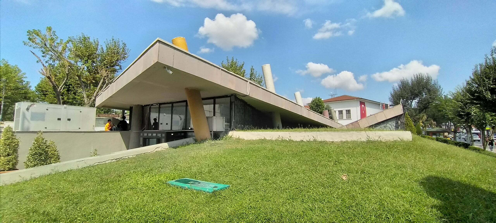
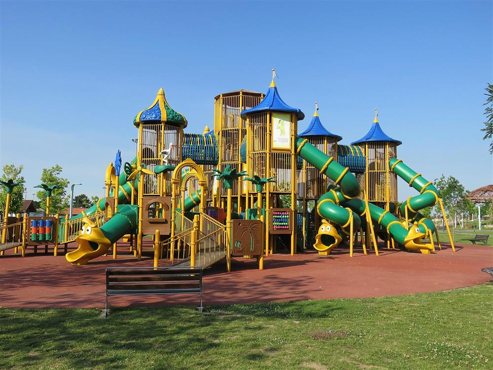
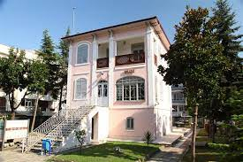
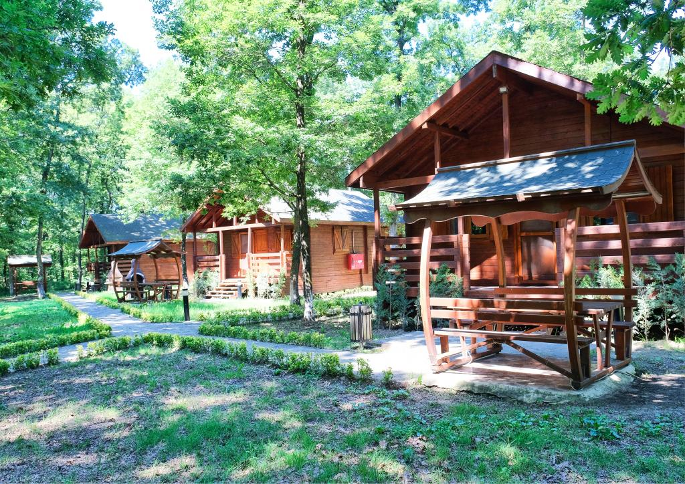
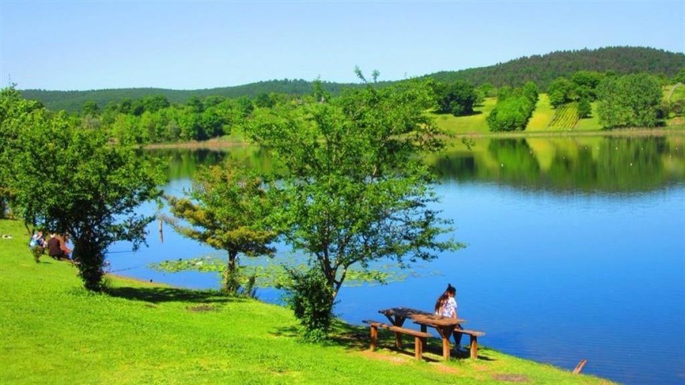
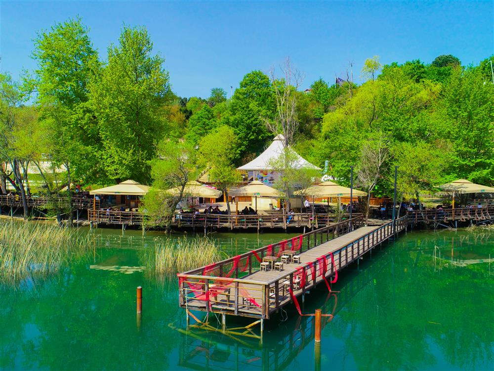
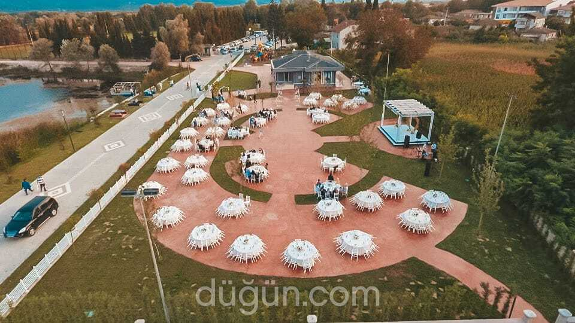
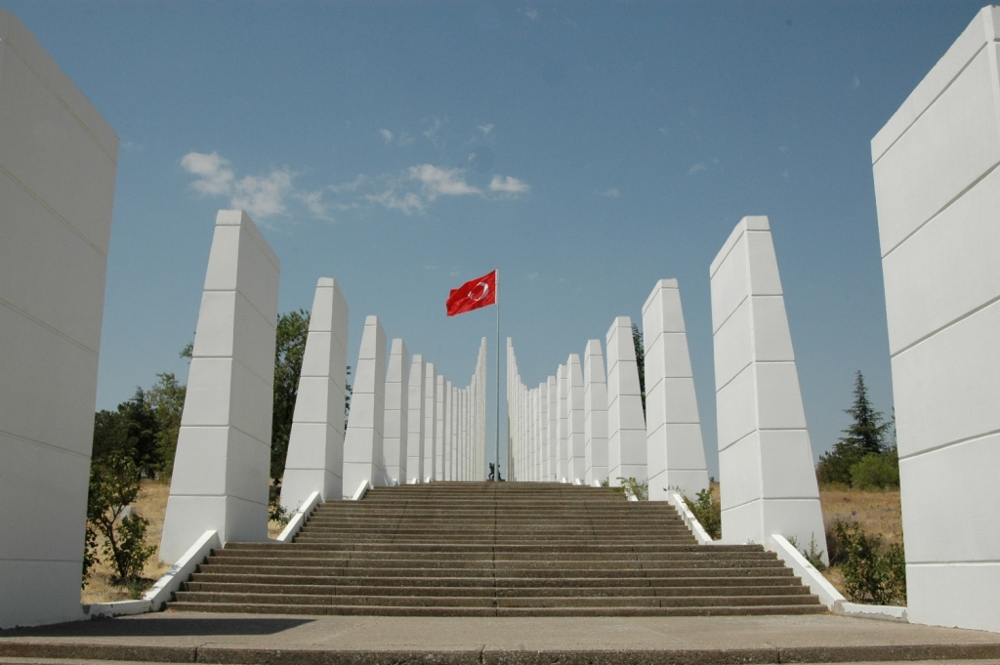
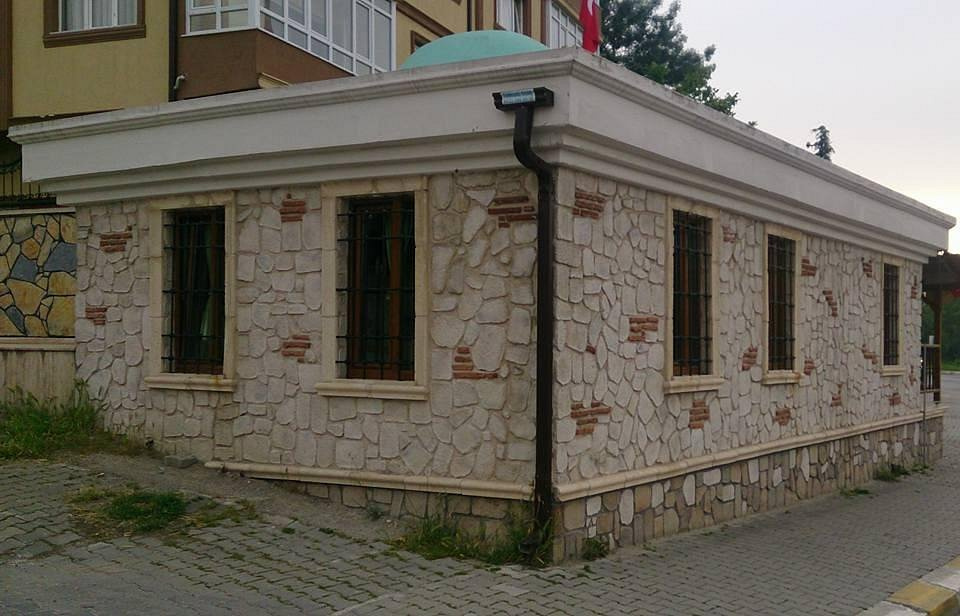
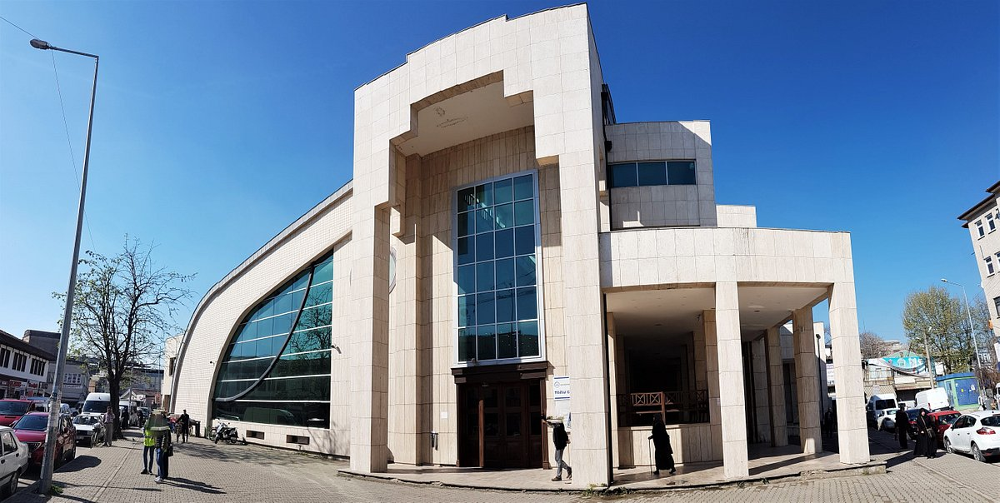

54 plakalı Sakarya bir büyükşehirdir. 2019 verilerine göre Türkiye'nin en kalabalık 22. şehridir ve 1,011 milyon nüfusa sahiptir. 06 Şubat 2023 TÜİK verilerine göre 16 İlçe ve belediye, bu belediyelerde ise toplam 668 mahalle bulunmaktadır. İl ismini topraklarından geçen Sakarya nehri'nden almıştır. Sakarya İlinin merkezi Adapazarı'dır. Adapazarı 2021 yılında Danimarka'da aldığı ödül ile bisiklet şehri unvanını kazanmıştır. Yüz ölçümü 4.823 km²'dir.
Şehrim Sakarya
İlin topoğrafyası üç ana kısımda incelenir: 1. Kuzeydeki alçak tepelik alanlar, 2. Orta kısımda Adapazarı ovası düzlüğü, 3. Güneyde engebeli dağlık alanlar. İl topraklarının %34'ü ovalar, %44'ü platolar, %22'si dağlar tarafından oluşturulur. İlin en yüksek dorukları Keremali Dağı (1543 m) ve Karadağ'dır (1467 m).
Sakarya ilinin Karadeniz kıyılarında Karadeniz iklimi, güney kısmında Marmara tipi Akdeniz iklimi etkilidir. Kuzeyde Fındık yetiştirilirken, güney ilçelerinde bir kısmı zeytin bahçesi olan meyve bahçeleri yaygın olması bunun göstergesidir. Sakarya'da iklimin etkisiyle nemcil Karadeniz Ormanları hakimdir. İl topraklarının %37'si (179.516,5 ha) korunmuş, %5'i (23.191,5 ha) bozulmuş olmak üzere %42'si (202.708,0 ha) orman alanıdır.

Burası Deprem Kültür Merkezi

Burası Sakarya Park

Burası Sakarya Orman Park

Burası Sakarya Müzesi

Burası Sakarya İl Ormanı Tabiat Parkı

Burası Poyrazlar Gölü

Burası Sapanca Gölü

Burası Serdivan Göl Park

Burası Gölya Tabiat Parkı

Burası Sakarya Şehitliği

Burası SakarBaba Türbesi

Burası Tozlu Cami